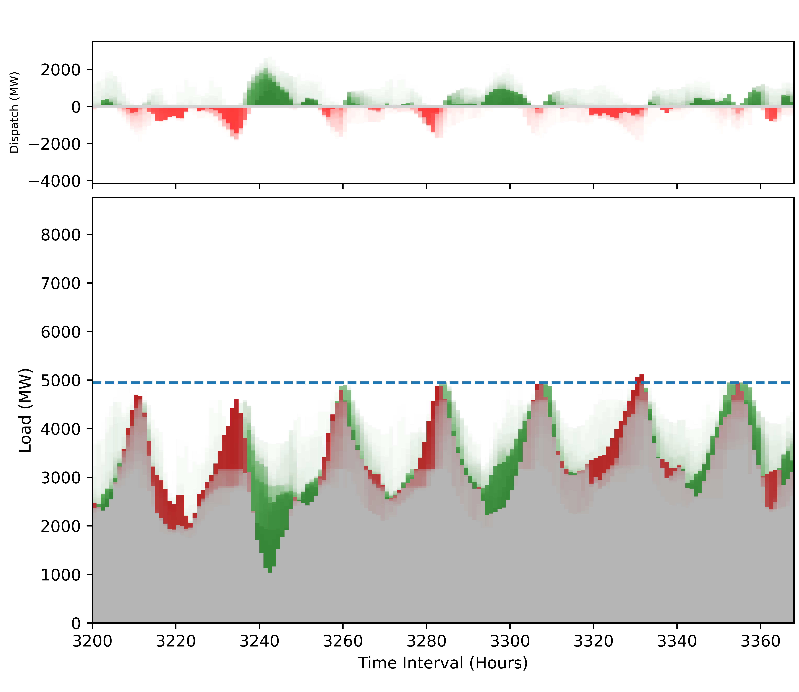

Impacts of Storage Dispatch Assumptions on Resource Adequacy
Researched the effects of energy storage dispatch assumptions on resource adequacy assessment using the NREL Probabilistic Resource Adequacy Suite. This research is being performed in the Renewable Energy Analysis Lab under Professor Daniel Kirschen and Ph.D. candidate Gord Stephen.
